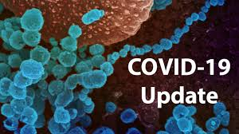

NGO NAME
Help others help society

Covide-19
Take Preventions, August 7, 2020
Protect yourself and others from COVID-19
If COVID-19 is spreading in your community, stay safe by taking some simple precautions, such as physical distancing, wearing a mask, keeping rooms well ventilated, avoiding crowds, cleaning your hands, and coughing into a bent elbow or tissue. Check local advice where you live and work. Do it all!
What to do to keep yourself and others safe from COVID-19
Maintain at least a 1-metre distance between yourself and others to reduce your risk of infection when they cough, sneeze or speak. Maintain an even greater distance between yourself and others when indoors. The further away, the better.
Make wearing a mask a normal part of being around other people.
Here are the basics of how to wear a mask:
Clean your hands before you put your mask on, as well as before and after you take it off.
Make sure it covers both your nose, mouth and chin.
Here are some specifics on what type of mask to wear and when, depending on how much virus is circulating where you live, where you go and who you are.
Wear a fabric mask unless you’re in a particular risk group. This is especially important when you can’t stay physically distanced, particularly in crowded and poorly ventilated indoor settings.
Wear a medical/surgical mask if you:
Are over 60,
Have underlying medical conditions,
Are feeling unwell, and/or
Are looking after an ill family member.
For more public advice on masks, read our Q&A and watch our videos. There is also a Q&A focused on masks and children.
For health workers, medical masks are essential personal protective equipment when engaging with patients with suspected, probable or confirmed COVID-19. Respirator masks (such as FFP2, FFP3, N95, N99) should be used in settings where procedures generating aerosols are performed and must be fitted to ensure the right size is worn.
What types of COVID-19 vaccines are being developed? How would they work?
Title description, April 2, 2014
Scientists around the world are developing many potential vaccines for COVID-19. These vaccines are all designed to teach the body’s immune system to safely recognize and block the virus that causes COVID-19.
Several different types of potential vaccines for COVID-19 are in development, including:
Inactivated or weakened virus vaccines, which use a form of the virus that has been inactivated or weakened so it doesn’t cause disease, but still generates an immune response.
Protein-based vaccines, which use harmless fragments of proteins or protein shells that mimic the COVID-19 virus to safely generate an immune response.
Viral vector vaccines, which use a virus that has been genetically engineered so that it can’t cause disease, but produces coronavirus proteins to safely generate an immune response.
RNA and DNA vaccines, a cutting-edge approach that uses genetically engineered RNA or DNA to generate a protein that itself safely prompts an immune response.
For more information about all COVID-19 vaccines in development, see this WHO publication, which is being updated regularly.
When will COVID-19 vaccines be ready for distribution?
We don’t yet know exactly when a safe and effective COVID-19 vaccine will be ready for distribution, but we estimate that it could be in early to mid-2021. Before COVID-19 vaccines can be delivered, several important challenges must be overcome:
The vaccines must be proven safe and effective in large (phase III) clinical trials. Many potential vaccines for COVID-19 are being studied, and some of the large clinical trials may report results in late 2020 or early 2021.
A series of independent reviews of the efficacy and safety evidence is required, including regulatory review and approval in the country where the vaccine is manufactured, before WHO considers a vaccine product for prequalification. Part of this process also involves the Global Advisory Committee on Vaccine Safety.
An external panel of experts convened by WHO, called SAGE, will analyze the results from clinical trials and along with evidence on the disease, age groups affected, risk factors for disease, and other information, they will recommend whether and how the vaccines should be used. Officials in individual countries will decide whether to approve the vaccines for national use and develop policies for how to use the vaccines in their country based on the WHO recommendations.
The vaccines must be manufactured in large quantities, which will be a major and unprecedented challenge – all the while continuing to produce all the other important life-saving vaccines already in use.
As a final step, vaccines will be distributed through a complex logistical process, with rigorous stock management and temperature control.
WHO is working with partners around the world to accelerate every step of this process, while also ensuring the highest safety standards are met. More information is available here.
Popular Posts
-
Lorem
Sed mattis nunc -

Ipsum
Praes tinci sed -
Dorum
Ultricies congue
Tags
vaccine INDIA London ANTIBODIES AMERICA DIY DONATION FACTS Family AWARENESS VENTILATERS Shopping COLD HOPE